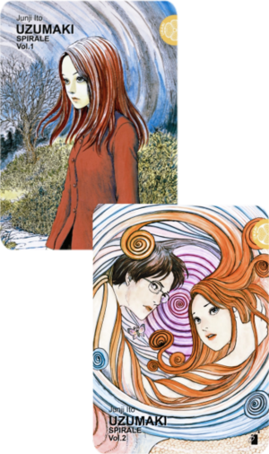

Anime
Una miniserie animata di Uzumaki, prodotta da Adult Swim, uscirà nell'ottobre del 2022.
Clicca il pulsante qui sotto per guardare il trailer!
Shop
Il manga è stato tradotto in italiano per la prima volta nel 2018, edito da Star Comics in due volumi.
Qui sono disponibili entrambi.